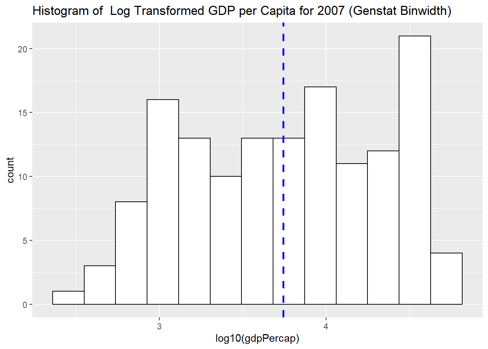

Chapter 2 EDA Lecture 1-2 R Examples
2.1 Example 2 - Gapminder
## Warning: package 'gapminder' was built under R version 4.0.4## # A tibble: 1,704 x 6
## country continent year lifeExp pop gdpPercap
## <fct> <fct> <int> <dbl> <int> <dbl>
## 1 Afghanistan Asia 1952 28.8 8425333 779.
## 2 Afghanistan Asia 1957 30.3 9240934 821.
## 3 Afghanistan Asia 1962 32.0 10267083 853.
## 4 Afghanistan Asia 1967 34.0 11537966 836.
## 5 Afghanistan Asia 1972 36.1 13079460 740.
## 6 Afghanistan Asia 1977 38.4 14880372 786.
## 7 Afghanistan Asia 1982 39.9 12881816 978.
## 8 Afghanistan Asia 1987 40.8 13867957 852.
## 9 Afghanistan Asia 1992 41.7 16317921 649.
## 10 Afghanistan Asia 1997 41.8 22227415 635.
## # ... with 1,694 more rows2.2 Frequency Distribution
##
## Africa Americas Asia Europe Oceania
## 624 300 396 360 24
2.4 Pie Chart
If you would like to have a regular pie chart, then you need to provide the frequency distribution.
2.5 Histogram
2.5.1 A Simple Histogram
2.5.2 Histogram With a Title
2.5.3 Histogram with Different Color Schemes:
2.5.4 Histogram of Log Transformed Variable:
2.5.5 Determine the Binwidth
How do we determine the binwidth?So we can create our own function for the binwidth:
width_bin = function(x) (max(x)-min(x)) / sqrt(length(x))
manualbin = width_bin(log10(gapminder$gdpPercap))or simply
plot3 +
geom_histogram(binwidth = function(x) (max(x)-min(x)) / sqrt(length(x)), color="black", fill="white") +
labs(title = "Histogram of Log Transformed GDP per Capita for All Years (Genstat Binwidth)")But you will notice that Gdp per capita variable includes all years, all continents, all countries!!!
2.5.6 Histogram for a Subset of Data
Log Transformed GDP per Capita for 2007:
2.5.7 Histogram with Overall Mean Line
Log Transformed GDP per Capita for 2007 with the Overall Mean Line
# Histogram with mean of log10(gdpPercap) on the plot
plot4 +
geom_histogram(binwidth = function(x) (max(x)-min(x)) / sqrt(length(x)), color="black", fill="white") +
geom_vline(aes(xintercept=mean(log10(gdpPercap))),
color="blue", linetype="dashed", size=1) +
labs(title = "Histogram of Log Transformed GDP per Capita for 2007 (Genstat Binwidth)")
2.5.8 Histogram with Density plot
# Histogram with density plot
ggplot(subset(gapminder, year == 2007),
aes(x = log10(gdpPercap))) +
geom_histogram(aes(y=..density..), binwidth = function(x) (max(x)-min(x)) / sqrt(length(x)),colour="black", fill="white")+
geom_density(alpha=0, fill="#FF6666") #alpha for transparency, if alpha = 0, no fill
2.5.9 Histogram with Facets
How about looking at the differences among different continents?
2.6 Boxplots
# Histogram with mean of log10(gdpPercap) on the plot
plot5 <- ggplot(subset(gapminder, year == 2007),
aes(x = year, y = log10(gdpPercap)))
# if x axis variable is numeric, then one single boxplot
# if x axis variable is categorical, then works like facets
plot5 +
geom_boxplot() #+ coord_flip()Try with ``continent" variable.
2.7 Scatter Plots
2.7.1 A Simple Scatter Plot
plot6 <- ggplot(subset(gapminder, year == 2007),
aes(x = lifeExp, y = log10(gdpPercap)))
plot6 +
geom_point()

2.7.3 Scatter Plot with Linear Lines for Different Groups
plot6 +
geom_point(aes(colour = factor(continent))) +
geom_smooth(aes(group = continent, colour = factor(continent)), lwd = 1, se = FALSE, method = "lm")## `geom_smooth()` using formula 'y ~ x'
plot7 <- ggplot(gapminder,
aes(x = lifeExp, y = log10(gdpPercap)))
plot7 +
geom_point(aes(colour = factor(continent))) +
facet_wrap(~ year) # scales = "free_x"For more check ``ggplot2: Elegant Graphics for Data Analysis (Use R!)" by (Hadley Wickham)